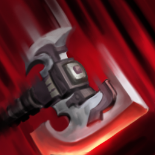
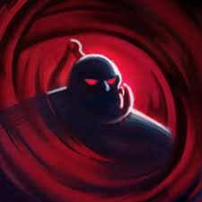
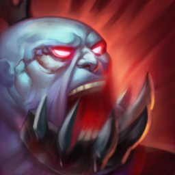
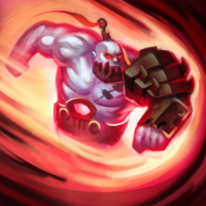

 DZIESIĄTKUJĄCE UDERZENIE
 KUŹNIA DUSZ
 RYK ZABÓJCY
 NIEPOWSTRZYMANA RZEŹ
Nieumarły niszczyciel
Biografia
Sion, brutalny pan wojny z minionej epoki, był czczony w Noxusie za uduszenie króla Demacii gołymi rękoma, lecz po śmierci nie było mu dane zaznać spokoju — został wskrzeszony, aby raz jeszcze służyć imperium. Rozpętywana przez niego rzeź pochłania wszystkich niezależnie od przynależności, co dowodzi, że nie zostało w nim wiele dawnego człowieczeństwa. Z prymitywną zbroją przykręconą do gnijącego ciała, Sion rzuca się w każdy bój z bezwzględną żywiołowością, i z każdym zamachem potężnym toporem próbuje przypomnieć sobie, jaki był kiedyś.
Noxus
Noxianie byli niegdyś barbarzyńskim plemieniem. Zmieniło się to dopiero po przejęciu starożytnego miasta, które służy im teraz za stolicę. Ponieważ wrogowie czyhali z każdej strony, konsekwentnie zaczęli im się przeciwstawiać, z każdym rokiem stopniowo, krok po kroku, rozszerzając granice swego państwa. Walka o przetrwanie uczyniła ze współczesnych Noxian dumny lud, który ponad wszystko ceni sobie siłę. Ta jednak może objawić się w różnoraki sposób.
Każdy, niezależnie od pozycji społecznej, pochodzenia i bogactwa, jest w stanie piąć się po szczeblach władzy i poważania, o ile tylko wykaże się odpowiednimi zdolnościami. Wysoko ceni się i pożąda tych, którzy potrafią używać magii — Noxus wyszukuje magów nawet poza swoimi granicami, by następnie szlifować i wykorzystywać ich specjalne talenty w służbie imperium.